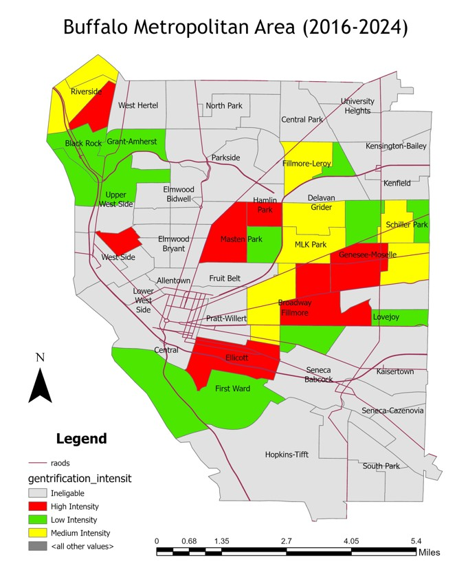
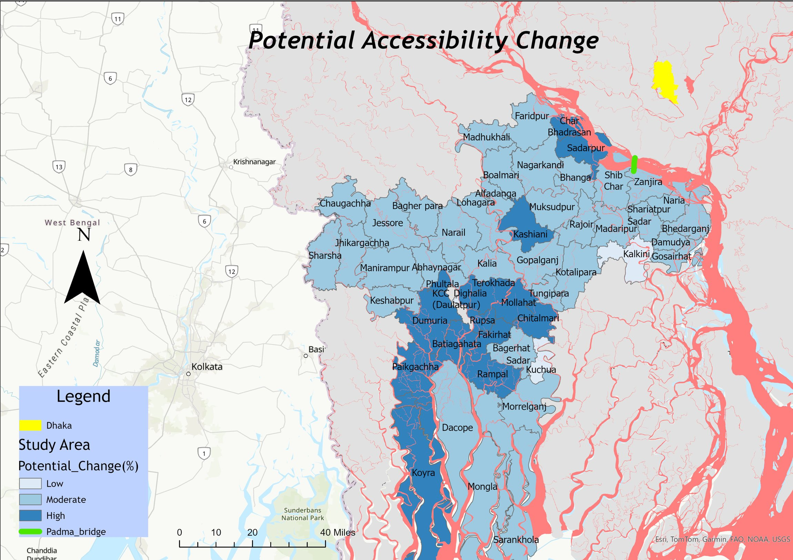
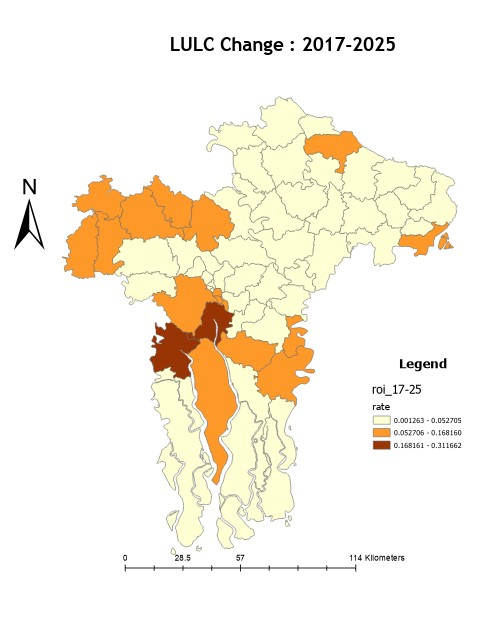
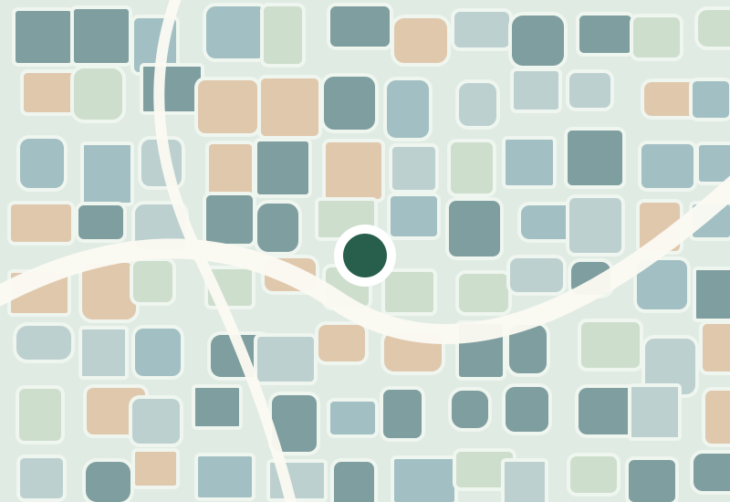
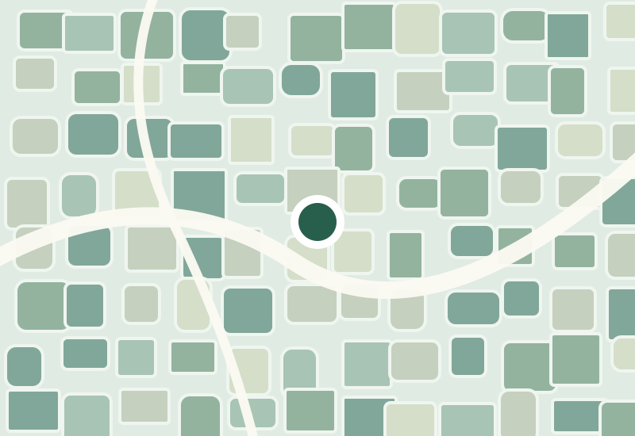

View projectGentrification and Neighborhood Change in Buffalo
A tract-level study of socioeconomic change (2016–2024), using a continuous intensity index, regression, and original GIS maps.
Explore researchA selection of academic research, GIS projects, and ongoing investigations. Detailed project pages distinguish completed coursework, collaborative research experience, and work in progress.
Showing all five projects

View projectA tract-level study of socioeconomic change (2016–2024), using a continuous intensity index, regression, and original GIS maps.
Explore research
View projectA gravity-based model of regional accessibility across 58 upazilas, using road connectivity, population, nighttime lights, and travel-time scenarios.
Explore research
View projectSentinel-2 classification of 58 upazilas, vegetation-to-impervious conversion mapping, and comparisons with nighttime lights and accessibility.
Explore research
View projectAn ongoing spatial examination of PM2.5 exposure in relation to income and racial composition.
Explore research
View projectApplied machine learning research using environmental and topographic predictors.
Explore researchThe Buffalo gentrification and Padma Corridor accessibility projects now feature original maps and downloadable course research materials. Other projects may still display decorative illustrations until their research materials are added. Results and limitations are described on each project page.